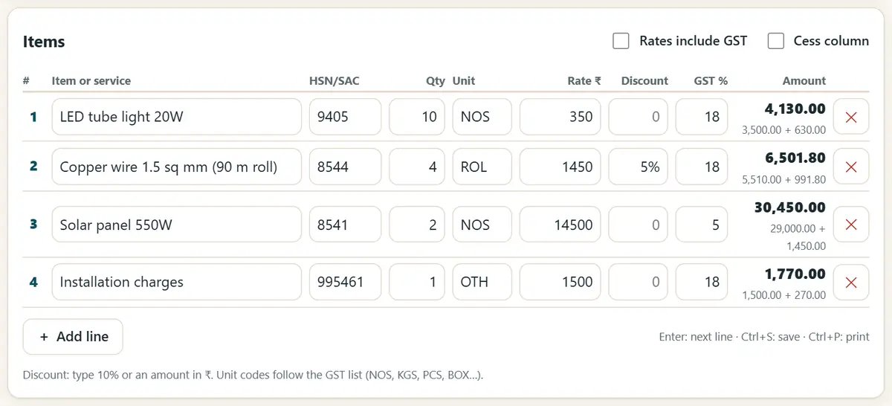
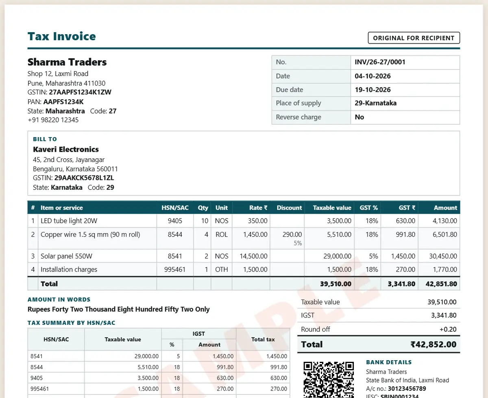

GST ಇನ್ವಾಯ್ಸ್ ಮಾದರಿ: GST ಬಿಲ್ ಅನ್ನು ಉಚಿತವಾಗಿ ತಯಾರಿಸುವುದು ಹೇಗೆ
GST ತೆರಿಗೆ ಇನ್ವಾಯ್ಸ್ನಲ್ಲಿ ಕೆಲವು ಅಗತ್ಯ ವಿವರಗಳಿರಬೇಕು; ತೆರಿಗೆ ವಿಭಜನೆ ಖರೀದಿದಾರರು ಎಲ್ಲಿದ್ದಾರೆ ಎಂಬುದನ್ನು ಅವಲಂಬಿಸುತ್ತದೆ. ಏನೇನು ಸೇರಿಸಬೇಕು ಮತ್ತು ಲೆಕ್ಕಪತ್ರ ಸಾಫ್ಟ್ವೇರ್ ಇಲ್ಲದೆ ಕೆಲವೇ ನಿಮಿಷಗಳಲ್ಲಿ ಸರಿಯಾದ ಇನ್ವಾಯ್ಸ್ ಹೇಗೆ ತಯಾರಿಸುವುದು ಎಂದು ಇಲ್ಲಿ ನೋಡಿ.
ಸಂಕ್ಷಿಪ್ತ ಉತ್ತರ
GST ತೆರಿಗೆ ಇನ್ವಾಯ್ಸ್ನಲ್ಲಿ ನಿಮ್ಮ ಹೆಸರು, ವಿಳಾಸ ಮತ್ತು GSTIN, ಪ್ರತ್ಯೇಕ ಇನ್ವಾಯ್ಸ್ ಸಂಖ್ಯೆ ಮತ್ತು ದಿನಾಂಕ, ಖರೀದಿದಾರರ ವಿವರ (B2B ನಲ್ಲಿ ಅವರ GSTIN), ಪೂರೈಕೆ ಸ್ಥಳ, ಪ್ರತಿ ವಸ್ತುವಿನ HSN ಅಥವಾ SAC ಕೋಡ್, ಪ್ರಮಾಣ, ದರ ಮತ್ತು ತೆರಿಗೆಯೋಗ್ಯ ಮೌಲ್ಯ, GST (ಒಂದೇ ರಾಜ್ಯದಲ್ಲಿ CGST + SGST, ಬೇರೆ ರಾಜ್ಯದಲ್ಲಿ IGST), ಒಟ್ಟು ಮೊತ್ತ ಮತ್ತು ಸಹಿ ಇರುತ್ತವೆ. GST ಇನ್ವಾಯ್ಸ್ ಮತ್ತು ಕೊಟೇಶನ್ ಮೇಕರ್ ತೆರಿಗೆ ವಿಭಜನೆಯನ್ನು ನಿಮಗಾಗಿ ತಾನೇ ಲೆಕ್ಕಿಸುತ್ತದೆ.
6 ಹಂತಗಳಲ್ಲಿ GST ಇನ್ವಾಯ್ಸ್ ತಯಾರಿಸಿ
-
ನಿಮ್ಮ ವ್ಯಾಪಾರದ ವಿವರಗಳನ್ನು ಒಮ್ಮೆ ತುಂಬಿ
GST ಇನ್ವಾಯ್ಸ್ ಮತ್ತು ಕೊಟೇಶನ್ ಮೇಕರ್ ತೆರೆದು “ನನ್ನ ವ್ಯಾಪಾರ” ತುಂಬಿ: ವ್ಯಾಪಾರದ ಹೆಸರು, ವಿಳಾಸ, GSTIN, ಬ್ಯಾಂಕ್ ಖಾತೆ, UPI ID, ಲೋಗೋ ಮತ್ತು ಸಹಿ. ಪ್ರತಿ ಇನ್ವಾಯ್ಸ್ನಲ್ಲಿ ಇವು ತಾನಾಗಿ ಬರುತ್ತವೆ.
-
ದಾಖಲೆಯ ಪ್ರಕಾರ ಆರಿಸಿ
“ಟ್ಯಾಕ್ಸ್ ಇನ್ವಾಯ್ಸ್”, “ಕೊಟೇಶನ್”, “ಬಿಲ್ ಆಫ್ ಸಪ್ಲೈ”, ಡೆಲಿವರಿ ಚಲನ್ ಅಥವಾ ಪಾವತಿ ರಸೀದಿ ಆರಿಸಿ. ಪ್ರತಿ ಆರ್ಥಿಕ ವರ್ಷದ ಇನ್ವಾಯ್ಸ್ ಸಂಖ್ಯೆಗಳು ಕ್ರಮವಾಗಿ ಬರುತ್ತವೆ.
-
ಗ್ರಾಹಕರನ್ನು ಸೇರಿಸಿ
ಗ್ರಾಹಕರ GSTIN ಬರೆಯಿರಿ ಅಥವಾ ಅವರ ರಾಜ್ಯ ಆರಿಸಿ. ಒಂದೇ ರಾಜ್ಯವಾದರೆ CGST + SGST, ಬೇರೆ ರಾಜ್ಯವಾದರೆ IGST ಎಂದು ಆ್ಯಪ್ ತಾನೇ ಆರಿಸುತ್ತದೆ.
-
ವಸ್ತುಗಳನ್ನು ಸೇರಿಸಿ
ಪ್ರತಿ ವಸ್ತುವಿಗೆ HSN ಅಥವಾ SAC ಕೋಡ್, ಪ್ರಮಾಣ, ಘಟಕ, ದರ ಮತ್ತು GST ದರ (0, 0.25, 3, 5, 18 ಅಥವಾ 40%) ಬರೆಯಿರಿ. ಉಳಿಸಿದ ವಸ್ತುಗಳು ಮುಂದಿನ ಬಾರಿ ತಾನಾಗಿ ತುಂಬುತ್ತವೆ.

HSN ಕೋಡ್, ಪ್ರಮಾಣ, ದರ ಮತ್ತು GST ಯೊಂದಿಗೆ ವಸ್ತುಗಳನ್ನು ಸೇರಿಸಿ. -
ಒಟ್ಟು ಮೊತ್ತ ಪರಿಶೀಲಿಸಿ
ಇನ್ವಾಯ್ಸ್ನಲ್ಲಿ ತೆರಿಗೆಯೋಗ್ಯ ಮೌಲ್ಯ, ಪ್ರತಿ ದರದ ತೆರಿಗೆ, HSN ಸಾರಾಂಶ ಮತ್ತು ಅಕ್ಷರಗಳಲ್ಲಿ ಒಟ್ಟು ಮೊತ್ತ ಕಾಣುತ್ತದೆ. ಗ್ರಾಹಕರು ಸರಿಯಾದ ಮೊತ್ತ ಪಾವತಿಸಲು UPI QR ಆನ್ ಮಾಡಿ.
-
ಮುದ್ರಿಸಿ ಅಥವಾ PDF ಆಗಿ ಉಳಿಸಿ
“ಮುದ್ರಣ / PDF” ಒತ್ತಿ Save as PDF ಆರಿಸಿ, ಇಮೇಲ್ ಅಥವಾ WhatsApp ನಲ್ಲಿ ಕಳುಹಿಸಿ. ತಿಂಗಳ ಕೊನೆಯಲ್ಲಿ ನಿಮ್ಮ ಲೆಕ್ಕಿಗರಿಗಾಗಿ ಇನ್ವಾಯ್ಸ್ ರಿಜಿಸ್ಟರ್ ಡೌನ್ಲೋಡ್ ಮಾಡಿ.

ತೆರಿಗೆ ವಿಭಜನೆ ಮತ್ತು ಒಟ್ಟು ಮೊತ್ತದೊಂದಿಗೆ ಸಿದ್ಧ ತೆರಿಗೆ ಇನ್ವಾಯ್ಸ್.
GST ತೆರಿಗೆ ಇನ್ವಾಯ್ಸ್ನಲ್ಲಿ ಅಗತ್ಯ ವಿವರಗಳು
- ನಿಮ್ಮ ಹೆಸರು, ವಿಳಾಸ ಮತ್ತು GSTIN, ಮತ್ತು ದಿನಾಂಕದೊಂದಿಗೆ ಪ್ರತ್ಯೇಕ ಇನ್ವಾಯ್ಸ್ ಸಂಖ್ಯೆ (16 ಅಕ್ಷರಗಳವರೆಗೆ).
- ಖರೀದಿದಾರರ ಹೆಸರು ಮತ್ತು ವಿಳಾಸ, B2B ಮಾರಾಟದಲ್ಲಿ ಅವರ GSTIN, ಮತ್ತು ರಾಜ್ಯದ ಹೆಸರಿನೊಂದಿಗೆ ಪೂರೈಕೆ ಸ್ಥಳ.
- ಪ್ರತಿ ವಸ್ತುವಿಗೆ: HSN ಅಥವಾ SAC ಕೋಡ್, ವಿವರಣೆ, ಪ್ರಮಾಣ, ದರ, ತೆರಿಗೆಯೋಗ್ಯ ಮೌಲ್ಯ, GST ದರ ಮತ್ತು CGST, SGST ಅಥವಾ IGST ಮೊತ್ತ.
- ತೆರಿಗೆ ರಿವರ್ಸ್ ಚಾರ್ಜ್ನಲ್ಲಿ ಪಾವತಿಸಬೇಕೇ ಇಲ್ಲವೇ, ಮತ್ತು ಪೂರೈಕೆದಾರ ಅಥವಾ ಅಧಿಕೃತ ವ್ಯಕ್ತಿಯ ಸಹಿ.
- HSN ಅಂಕಿಗಳು: ₹5 ಕೋಟಿವರೆಗಿನ ವಹಿವಾಟಿಗೆ B2B ಇನ್ವಾಯ್ಸ್ನಲ್ಲಿ 4 ಅಂಕಿ, ₹5 ಕೋಟಿಗಿಂತ ಹೆಚ್ಚಿದ್ದರೆ 6 ಅಂಕಿ.
ಈ ಮಾರ್ಗದರ್ಶಿ ಸಾಮಾನ್ಯ ಮಾಹಿತಿ ಮಾತ್ರ, ತೆರಿಗೆ ಅಥವಾ ಕಾನೂನು ಸಲಹೆಯಲ್ಲ. ನಿಮ್ಮ ವಿಷಯಕ್ಕೆ ತೆರಿಗೆ ತಜ್ಞರನ್ನು ಕೇಳಿ.
ಹೊಸ ಉಚಿತ ಟೂಲ್ಗಳು ಮತ್ತು ಹಿಂದಿಯಲ್ಲಿ AI ಪಾಠಗಳನ್ನು ಪಡೆಯಿರಿ
ನಮ್ಮ ಇಮೇಲ್ ಪಟ್ಟಿಗೆ ಸೇರಿ: ಹೊಸ ಉಚಿತ ಆ್ಯಪ್ಗಳು, ಹೊಸ ಮಾರ್ಗದರ್ಶಿಗಳು ಮತ್ತು AI ಕುರಿತ ಹಿಂದಿ ವೀಡಿಯೊ ಪಾಠಗಳ ಮಾಹಿತಿ ನಿಮಗೆ ಬರುತ್ತದೆ. ಸ್ಪ್ಯಾಮ್ ಇಲ್ಲ.
ವಯಸ್ಕರಿಗೆ (18+) ಮಾತ್ರ. ಯಾವಾಗ ಬೇಕಾದರೂ ಹೆಸರು ತೆಗೆಸಬಹುದು.
ನಾವು ಈ ಟೂಲ್ಗಳನ್ನು ಏಕೆ ಸೂಚಿಸುತ್ತೇವೆ
- ಎಲ್ಲರಿಗೂ ಉಚಿತ: ಜಾಹೀರಾತು ಇಲ್ಲ, ಸೈನ್-ಅಪ್ ಇಲ್ಲ, ಪಾವತಿ ಯೋಜನೆ ಇಲ್ಲ.
- ಖಾಸಗಿ: ನಿಮ್ಮ ಫೈಲ್ಗಳು ಮತ್ತು ವಿವರಗಳು ನಿಮ್ಮ ಸ್ವಂತ ಸಾಧನದಲ್ಲೇ ಇರುತ್ತವೆ.
- ಫೋನ್, ಲ್ಯಾಪ್ಟಾಪ್ ಅಥವಾ ಸ್ಮಾರ್ಟ್ಬೋರ್ಡ್ನಲ್ಲಿ ಕೆಲಸ ಮಾಡುತ್ತವೆ, ಒಮ್ಮೆ ತೆರೆದ ನಂತರ ಇಂಟರ್ನೆಟ್ ಇಲ್ಲದೆಯೂ.
- ಕನ್ನಡ ಮತ್ತು ಹಿಂದಿ ಸೇರಿದಂತೆ 12 ಭಾಷೆಗಳಲ್ಲಿ.
ವೀಡಿಯೊ ಮೂಲಕ ಕಲಿಯಲು ಇಷ್ಟವೇ? ನಮ್ಮ YouTube ಚಾನೆಲ್ನಲ್ಲಿ AI ಮತ್ತು ಉಚಿತ ಟೂಲ್ಗಳ ಹಿಂದಿ ಪಾಠಗಳನ್ನು ನೋಡಿ.
ಆಗಾಗ ಕೇಳುವ ಪ್ರಶ್ನೆಗಳು
CGST, SGST ಮತ್ತು IGST ನಡುವಿನ ವ್ಯತ್ಯಾಸವೇನು?
ಮಾರಾಟಗಾರ ಮತ್ತು ಖರೀದಿದಾರ ಒಂದೇ ರಾಜ್ಯದಲ್ಲಿದ್ದರೆ GST ಅರ್ಧ-ಅರ್ಧ CGST ಮತ್ತು SGST ಆಗಿ ವಿಭಜನೆಯಾಗುತ್ತದೆ. ಬೇರೆ ಬೇರೆ ರಾಜ್ಯಗಳಲ್ಲಿದ್ದರೆ ಪೂರ್ಣ GST ಯೇ IGST. ಇದನ್ನು ಆ್ಯಪ್ ಪೂರೈಕೆ ಸ್ಥಳದಿಂದ ನಿರ್ಧರಿಸುತ್ತದೆ.
ತೆರಿಗೆ ಇನ್ವಾಯ್ಸ್ ಬದಲು ಬಿಲ್ ಆಫ್ ಸಪ್ಲೈ ಯಾವಾಗ ಕೊಡಬೇಕು?
ಕಾಂಪೊಸಿಷನ್ ವ್ಯಾಪಾರಿಗಳು ಮತ್ತು GST ವಿನಾಯಿತಿ ಇರುವ ವಸ್ತು ಅಥವಾ ಸೇವೆಗಳನ್ನು ಮಾರುವವರು GST ತೋರಿಸದ ಬಿಲ್ ಆಫ್ ಸಪ್ಲೈ ಕೊಡುತ್ತಾರೆ. ಖಚಿತವಿಲ್ಲದಿದ್ದರೆ ನಿಮ್ಮ ಲೆಕ್ಕಿಗರನ್ನು ಕೇಳಿ.
ಇದರಿಂದ ಇ-ಇನ್ವಾಯ್ಸ್ (IRN) ಅಥವಾ ಇ-ವೇ ಬಿಲ್ ತಯಾರಾಗುತ್ತದೆಯೇ?
ಇಲ್ಲ. ಇದು ಮಾದರಿ ತಯಾರಿಸಲು ನೆರವಾಗುತ್ತದೆ. IRN ಸಹಿತ ಇ-ಇನ್ವಾಯ್ಸ್ ₹5 ಕೋಟಿಗಿಂತ ಹೆಚ್ಚಿನ ವಹಿವಾಟಿಗೆ ಬೇಕು; ಇ-ವೇ ಬಿಲ್ ಸರ್ಕಾರಿ ಪೋರ್ಟಲ್ನಲ್ಲಿ ತಯಾರಾಗುತ್ತದೆ.
ನನ್ನ ಗ್ರಾಹಕರು ಮತ್ತು ಬೆಲೆಗಳ ವಿವರ ಸುರಕ್ಷಿತವೇ?
ಹೌದು. ವ್ಯಾಪಾರದ ವಿವರ, ಗ್ರಾಹಕರು ಮತ್ತು ಇನ್ವಾಯ್ಸ್ಗಳು ನಿಮ್ಮ ಸಾಧನದ ಬ್ರೌಸರ್ನಲ್ಲಿ ಮಾತ್ರ ಉಳಿಯುತ್ತವೆ. ಒಂದು ಪ್ರತಿ ಇಟ್ಟುಕೊಳ್ಳಲು ಬ್ಯಾಕಪ್ ಫೈಲ್ ತಯಾರಿಸಿ.
ಯಾವ GST ದರಗಳನ್ನು ಬಳಸಬಹುದು?
22 ಸೆಪ್ಟೆಂಬರ್ 2025 ರಿಂದ GST ದರಗಳು 0, 0.25, 3, 5, 18 ಮತ್ತು 40%; 12% ಮತ್ತು 28% ಸ್ಲ್ಯಾಬ್ಗಳು ಆಗಲೇ ಮುಗಿದವು. ನಿಮ್ಮ ವಸ್ತುಗಳ ಸರಿಯಾದ ದರ ಮತ್ತು HSN ಕೋಡ್ ಅನ್ನು ಲೆಕ್ಕಿಗರೊಂದಿಗೆ ಖಚಿತಪಡಿಸಿ.
ಉಪಯೋಗವಾಯಿತೇ?
ಸ್ನೇಹಿತರಿಗೆ, ಸಹೋದ್ಯೋಗಿಗಳಿಗೆ ಅಥವಾ ನಿಮ್ಮ ಶಾಲೆಯ WhatsApp ಗುಂಪಿಗೆ ಕಳುಹಿಸಿ.